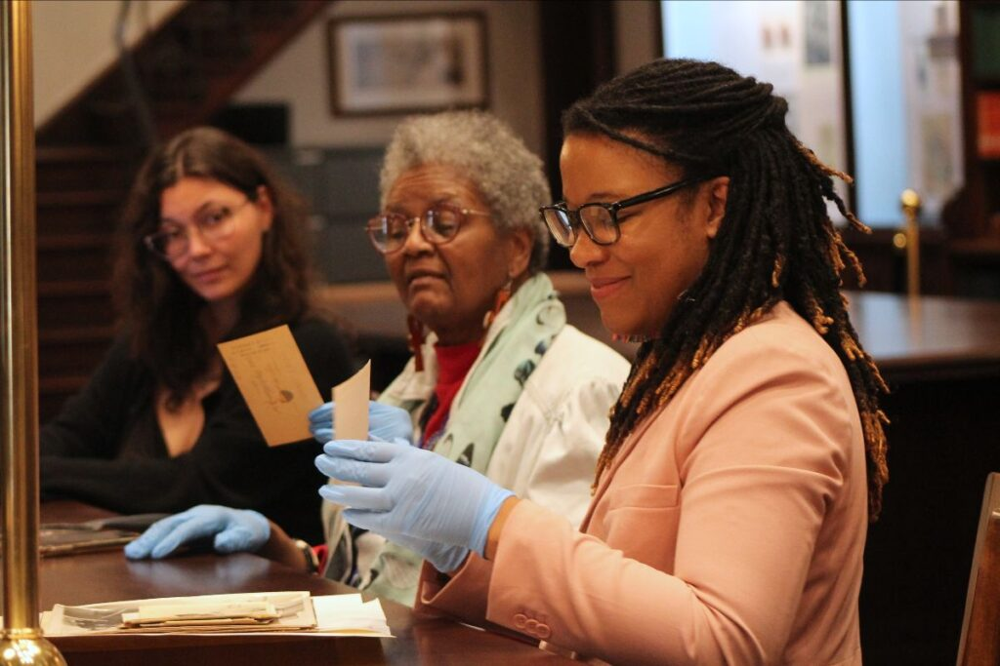

Archiving as Cultural Care
Caring for a culture means keeping the evidence of how people lived, worked, created and organized. Records can confirm that a community existed, show how it faced hard times, and give later generations something to build on.

Photo credit: Georgia Historical Society (GHS).
Whose Stories Get Saved?
For a long time, many archives focused on the records of powerful people and institutions. As a result, the histories of many communities were thinly documented or missing. Community archives push back by collecting the stories that official collections overlooked.
The Schomburg Center for Research in Black Culture in Harlem is one example. It began with one scholar’s effort to gather proof of Black history, and it grew into a research library with millions of items.
Ways Communities Practice Archival Care
- Collecting
- Family photographs and letters
- Records from local clubs and congregations
- Oral histories from elders
- Sharing
- Neighborhood exhibitions
- Digital collections that anyone can search
- Protecting
- Safe storage for fragile items
- Agreements about who controls sensitive records
Good archival care also asks who owns a story. Communities should have a say in how their records are described, used and shared.